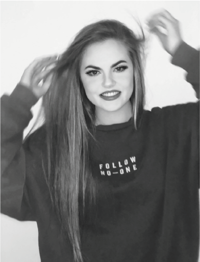

My name is Paula Brown, I am a UX designer from Belfast, Northern Ireland.
I have a strong passion for illustrations and decided to take this passion and make it into a reality! Thus far I have created three illustrations of famous celebrities using my unique illustrative style.
Ari
This was the first illustration I attempted in this illustrative style, it was much more difficult than I first anticipated and took me a lot longer than I expected. However I completed it and learnt a lot while doing so.
I chose to illustrate this image of Ariana Grande because it features her high pony tail, which is an iconic Ariana Grande hairstyle and look.
The hardest piece of this illustration was without question her hair.
Yeezy
I knew I wanted more colour to be incorporated into this illustration, so I added hints of blue and purple into the ends of some of my gradients to make the over all illustration more vibrant.
Again I chose a photo that would represent Kanye well, the facial expression in this illustration in undoubtedly the first thing I and many others imagine when first thinking of Kanye West.
I very much enjoyed completing this piece, I found it very fun and relaxing. However I would say the beard was defiantly the area I struggled with most.
JB
I also added pops of colour to the ending of some gradients in this illustration. As you can see I worked with the colour orange to help emphasis the darker tones on his face.
Justin Bieber has many iconic looks but I decided on this look as it is right in the middle of his career where he produced many hit songs and was seen as one of the biggest teenage icons in the world!
I spent a long time on the hair, I am very happy with the outcome as without the extensive detail in the hair this whole piece would not look as good. That being said it was still the hardest area to complete in this illustration.